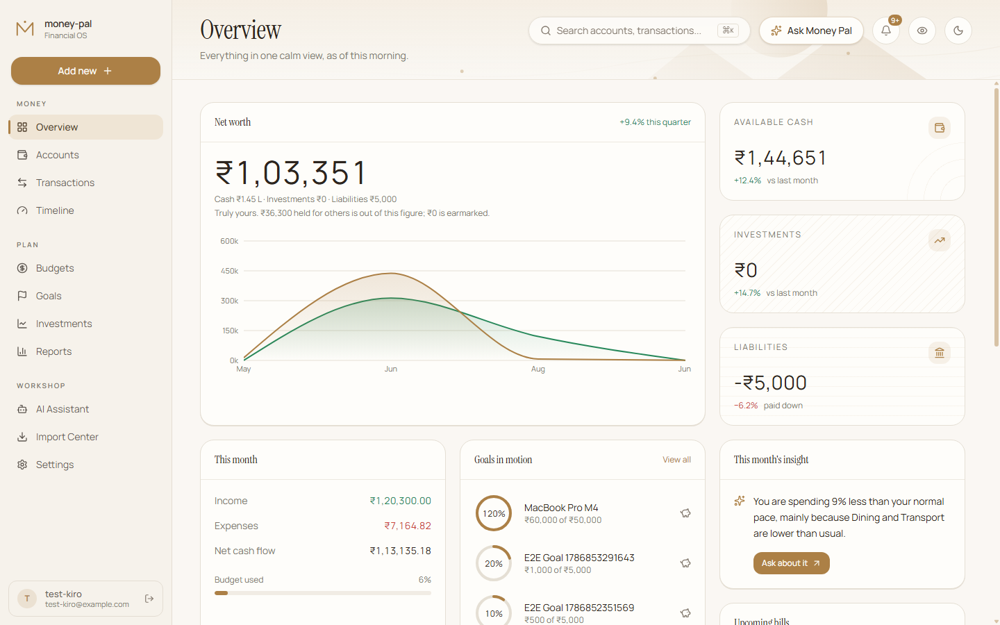
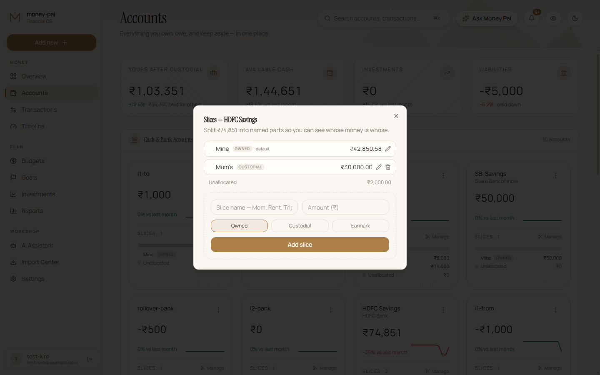
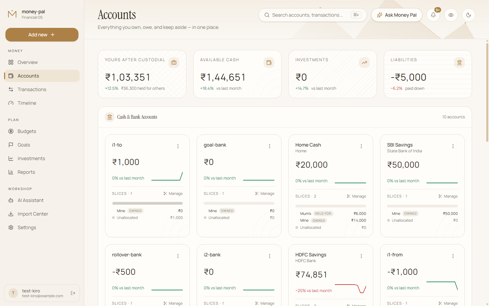
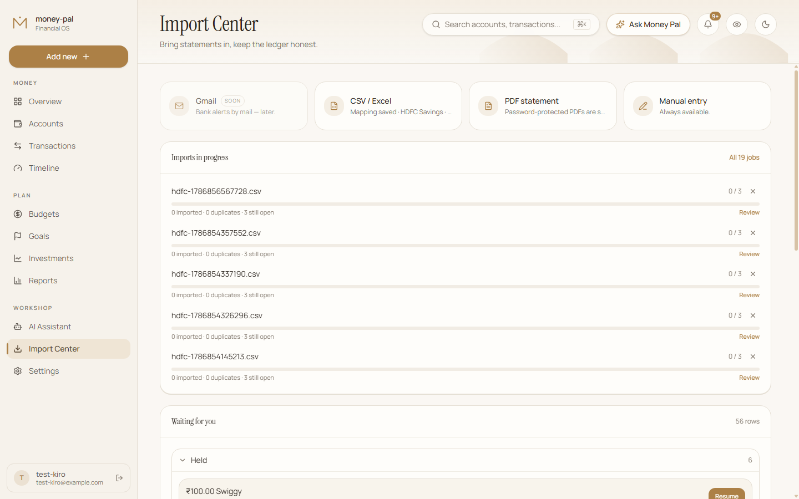
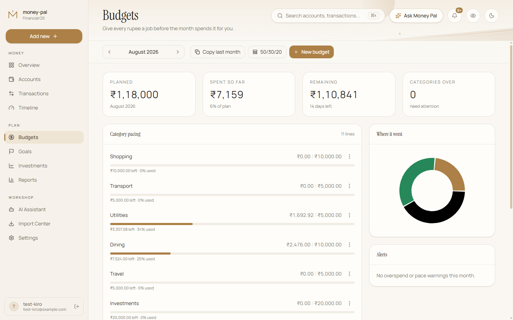
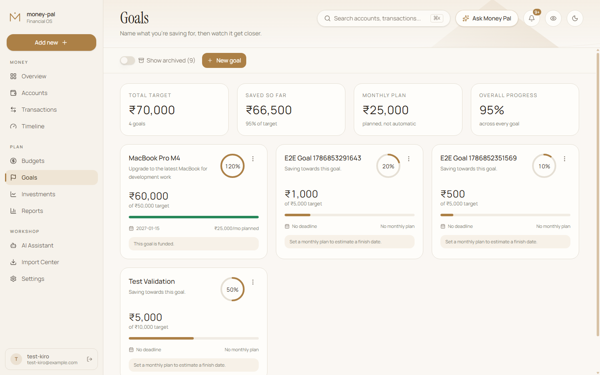
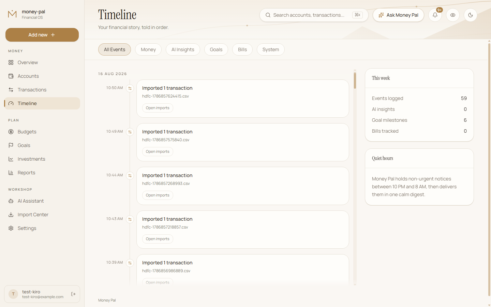
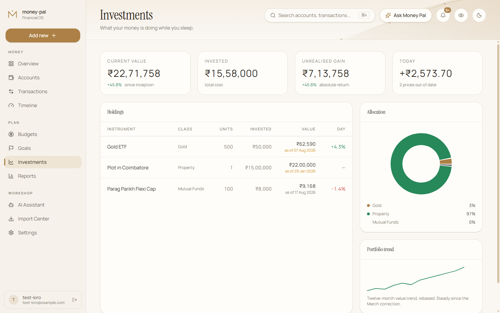

Finally, a finance app that knows not all the money in your account is yours.
Every finance app shows you your bank balance. But that number lies.
When your account shows ₹77,000, is that actually yours to spend? Or is ₹50,000 of it money your mother parked with you? Is ₹7,000 set aside for emergencies? The real answer is: you have ₹20,000.
| Label | Amount | Kind | In net worth? |
|---|---|---|---|
| Mom's money | ₹50,000 | Custodial | No — you hold it, you don't own it |
| Mine | ₹20,000 | Owned | Yes |
| Emergency fund | ₹7,000 | Earmarked | Yes — yours, but reserved |
Your bank says ₹77,000. Your net worth is ₹27,000. Other apps cannot tell the difference.
A label is a named slice of money inside one account. One bank balance, many owners. Every transaction specifies which label the money comes from or goes to.
Labels have three kinds:
This is the whole product. Every other feature — budgets, goals, imports, the dashboard — exists to make labels useful.

Why not just use multiple bank accounts?
You could. But then you need to explain to your mother why she should open an account she will never log into. And you pay fees on each one. Labels let you keep one real account while tracking ownership properly inside it.
Once you have access (via an invite link or your own self-hosted instance), getting started takes three steps:
Go to Accounts and click Add account. Choose the type:
Every account starts with a default label called Unassigned. Any money not explicitly labelled lands here.
On the Accounts page, click the menu on any account and choose Manage labels. Add labels for how you actually think about that money:
Labels belong to one account. "Trip" in your HDFC account and "Trip" in your cash wallet are two separate labels — they can share a name but never mix.

Go to Transactions and click Add. Fill in:
You can split a transaction across multiple labels. Paying rent from your own money and your roommate's share? Select both labels and specify the amounts.
Tip: Get the opening balances right. Add a "Starting balance" transaction for each label when you set up. Then everything after is automatically correct.

Manual entry works, but importing your bank statement is faster. Money Pal reads CSV and Excel files — the statement never leaves your browser.
| Bank | Format | Notes |
|---|---|---|
| HDFC (savings) | CSV, Excel | Built-in column mapping |
| HDFC (credit card) | CSV, Excel | Built-in column mapping |
| DBS | CSV, Excel | Built-in column mapping |
| Other banks | CSV, Excel | Manual column mapping (saved for reuse) |
| PDF statements | Text-based PDFs only; scanned images not supported |
Not every row imports automatically. The review screen shows you:
How categorisation learns: When you assign a category to a merchant, Money Pal saves that as a rule. Next time you import a transaction from "SWIGGY", it already knows that's "Food & Dining".
You can view and edit these rules in Settings → Import rules.
Re-importing the same file does nothing — each row is hashed, and duplicates are skipped automatically. Two genuine identical transactions on the same day (two ₹200 Swiggy orders) both import correctly.
If you see a "possible duplicate" flag, it means the amount and date match an existing transaction, but the description differs. Review it — it might be a duplicate from a different export format, or it might be legitimate.

A budget is a spending limit for a category in a month. Set ₹15,000 for Groceries, and Money Pal shows you how much you have left as you spend.
You can also use the 50/30/20 template to auto-create budgets based on your income: 50% needs, 30% wants, 20% savings.
Budget progress is always live. It's calculated as the sum of your spending in that category for the current month — nothing is stored or cached. Delete a transaction, and your budget progress updates instantly.
No rollover: Unspent budget does not carry forward to next month. Each month starts fresh. This is a deliberate choice — rollover budgets tend to accumulate confusing surpluses. If you want to save money across months, use a Goal instead.
Starting a new month? Click Copy last month to bring over your previous budget amounts. Categories you have already set up this month are not overwritten.

A goal is something you are saving toward: a holiday, a new laptop, an emergency fund. Unlike a budget (which limits spending), a goal tracks contributions.
Click Contribute on any goal and enter the amount you are putting aside. You can optionally link the contribution to a transaction (like a transfer to a savings account).
Goals vs Earmark labels: A goal tracks progress toward a target. An earmark label reserves money inside an account. They are different tools. You might have an "Emergency" earmark label holding ₹50,000, and a separate "Build emergency fund" goal tracking your progress toward ₹100,000.
Goal progress equals the sum of your contributions. It is not tied to any account balance — even if you spend from your savings account, your goal's "saved" amount does not change. This is intentional: a goal tracks what you have committed, not what remains in a particular account.
Monthly contribution is a guide, not an auto-transfer: Setting a monthly contribution amount helps Money Pal calculate your estimated finish date and warn you if you are behind pace. But nothing moves automatically — you contribute manually when you choose to.

The Timeline is a chronological feed of financial events: transactions, budget alerts, goal milestones, and upcoming bills. Filter by event type to see just what matters to you.
Credit card due dates appear here automatically once you set up card cycles in your credit card accounts.
Track your investment holdings across equity, mutual funds, gold, and fixed income. The Investments page shows:
Add holdings manually or import them. Prices update daily for holdings with symbols; manually-valued holdings (like property) keep their last entered value until you update them.
Investment accounts in net worth: The Overview shows your investment account ledger balance (what you transferred in), not the market value of holdings. This is because buying a mutual fund is a transfer from bank to broker — the principal is already counted. Adding market value would count the money twice.
The Assistant answers questions about your finances using natural language. Ask things like:
What the Assistant can see: The Assistant only receives computed aggregates — totals by category, by label kind, by month. It never sees individual transaction rows, merchant names, account numbers, or other sensitive details. Your raw financial data stays private.
Money Pal can alert you to important events:
Configure notification preferences in Settings.


Money Pal can run on your own server. The setup is two containers: the app and a Postgres database.
# Clone the repository
git clone https://github.com/yourusername/money-pal.git
cd money-pal
# Copy and edit the environment file
cp .env.example .env
# Edit .env with your settings
# Start the containers
docker compose up -d| Variable | Description |
|---|---|
DATABASE_URL |
Postgres connection string |
SUPABASE_URL |
Your Supabase project URL (or self-hosted Supabase) |
SUPABASE_PUBLISHABLE_KEY |
Supabase anon/public key |
SUPABASE_SERVICE_ROLE_KEY |
Supabase service role key (server-side only) |
For detailed setup instructions, see SETUP.md in the repository.
Alpha software: Money Pal is in active development. Your data is important — keep backups. If you need data deleted, ask and it will be done. Real deletion, including any append-only audit rows.